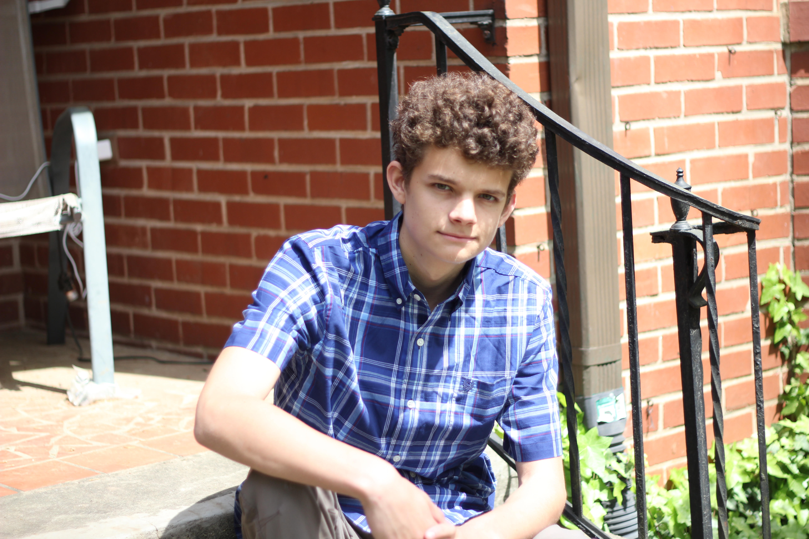

[Add headshot here: headshot.jpg]Computer Engineering student at Georgia Tech
I build interactive games, embedded systems, and practical software tools. I care about making technology that people enjoy using, and I like solving problems where the hardware and the software have to work together.
PythonJavaC#GDScriptEmbedded SystemsGame DevelopmentI am a Computer Engineering student at the Georgia Institute of Technology, expected to graduate in May 2028. Before transferring to Georgia Tech, I completed my first two years of the Bachelor of Science in Computer Engineering at Kennesaw State University, where I earned a 3.9 GPA and made the President's List and the Dean's List. My interest in engineering started with games. I wanted to know how the things I played actually worked, so I began writing code and kept going from there.
That curiosity has grown into a broader interest in how software connects to the physical world. I have built a Raspberry Pi system from the operating system up, written scripts for hardware control, and worked with Linux, SSH, and networking configuration. I have also finished four games, which taught me how to plan a project, test it with real players, and fix problems quickly when they come up.
Outside of class and projects, I work as a lifeguard, where I am responsible for the safety of swimmers across eight pool locations. I also work as a host and dishwasher at The Marlay House. Both jobs taught me to stay calm under pressure, communicate clearly with coworkers and customers, and keep my focus on the details that matter most. I am also active in the Game Development Club and play intramural basketball.
[OPTIONAL: Add one or two sentences about what first sparked your interest in computing or a moment that changed how you think about engineering. A short, specific story is more memorable than a list of facts.]
Short-term (Summer 2027): I am seeking a summer internship in user-interactive experiences or electronic communication systems. I want a role where I can apply what I have learned in game development and embedded systems to products that real people use.
Mid-term (before graduation in 2028): Build on my coursework with projects that combine software and hardware, and gain experience working on a team with a larger codebase than I have worked with alone. I also plan to strengthen my knowledge of networking and signal processing, which connects to my wave generation and captioning projects.
Long-term: Work as an engineer on interactive products, whether that means game systems, user interfaces, or communication hardware. I eventually want to lead small technical teams and take responsibility for both the design and the implementation of a product.
My projects are the heart of this portfolio. Each one shows a problem I wanted to solve, the decisions I made along the way, and what came out of the work. The Discovery Project Feature appears first.
[Describe the problem you set out to solve, who it affects, and why it matters. Explain what was missing or not working and why you chose to address it.]
[Walk through how you approached the work. Describe your research, the design choices you made, the tools and languages you used, the problems you ran into, and how you tested and revised the project. Consider using the design thinking stages: empathize, define, ideate, prototype, and test.]
[Describe the final result. Include measurable outcomes such as users, performance, or completion, and explain what you learned and what you would do differently next time.]
I have shipped four games, including two original titles that I designed and built on my own.
Type: 2D tank battle puzzle game
I wrote more than 2,000 lines of code to build this game. It includes 50 unique levels, eight or more AI opponents, online leaderboards, and an infinite mode. The web release attracted more than 45 unique players, which showed me how much careful level design and balance matter.
Type: Guitar Hero-style rhythm game
This game has more than 4,000 lines of code and features eight original songs, a badge and achievement system, and saved high scores. It reached more than 25 downloads. Building it taught me how to keep timing accurate and how to design systems that reward players for steady progress.
[OPTIONAL: Add the names and descriptions of your other two shipped games, if you want them shown.]
I applied the Fast Fourier Transform along with Blender's ocean physics engine to generate realistic calm and turbulent water effects for a 2D isometric game. The Fast Fourier Transform lets me describe a wave surface as a set of frequencies, which makes it possible to create water that looks natural without animating every frame by hand. This project connected my interest in signal processing to visual design.
I built a Python application that generates captions automatically from speech. It uses OpenAI's Whisper library to transcribe audio, converts the transcript into structured JSON, and then uses FFMPEG to render captions directly into the video. Users can customize the font, size, color, outline, and placement of the captions. This project taught me how to combine several tools into one pipeline, and how to make sure each stage's output is in the format the next stage expects.
I installed and configured Raspberry Pi OS on a Raspberry Pi 5, set up Wi-Fi hotspot and LAN connectivity, and enabled SSH for remote access. I then wrote Python and Bash scripts to control the hardware and to debug it remotely. This project gave me hands-on experience with the Linux command line and the workflow of embedded development, from flashing an image to running code on hardware.
I guarded swimmers and monitored water chemistry at eight pool locations. My work focused on preventing incidents through constant supervision and responding quickly when something went wrong. Each summer I worked 30 to 40 hours per week, which included opening and closing duties and helping members with questions.
I manage host duties, including seating guests and coordinating with servers, and I run industrial dishwashing so the kitchen and dining room keep moving. I work 15 to 20 hours per week throughout the year. This job has made me better at managing several tasks at once and keeping a clear sense of priorities during busy shifts.
Bachelor of Science in Computer Engineering. Expected graduation: May 2028. Activities: Game Development Club and Intramural Basketball.
Bachelor of Science in Computer Engineering, 3.9 GPA. President's List (Fall 2024 and Spring 2026) and Dean's List (Spring 2025 and Fall 2025). Activities: Game Development Club, Intramural Basketball, and Social Justice Club.
Python, Java, C#, GDScript
Linux command line, Raspberry Pi and embedded systems, SSH and remote debugging, Wi-Fi and LAN networking, FFMPEG, JSON, Git
Communication, teamwork, performing under high-stress conditions, and steady improvement under pressure
A one-page version of my resume is available for download below.
Download Resume (PDF)[Upload your resume as resume.pdf to the same folder as this site.]
I am always glad to talk about games, embedded systems, or internship opportunities.